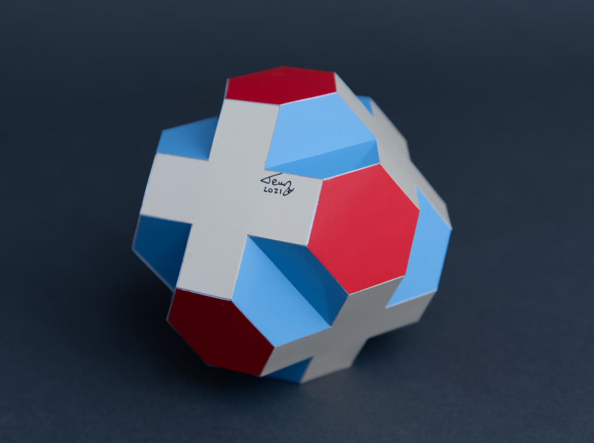
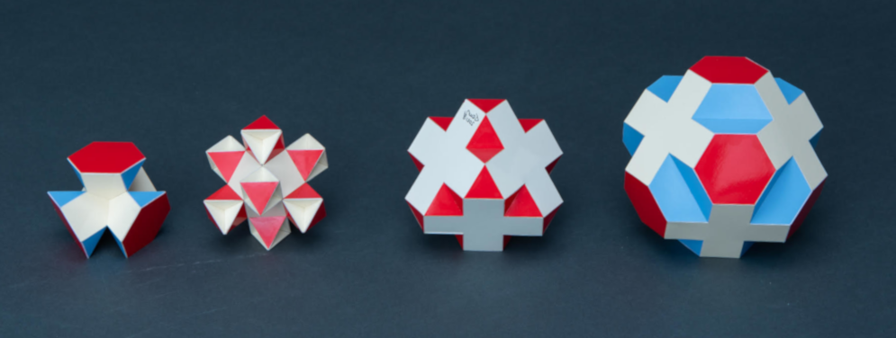

Deflated Swissohedron

This is a variant of the Swissohedron where the crosses are moved outwards until the triangles at the 3-fold axes become regular hexagons. The blue faces can either be seen as intersecting isosceles hexagons or as folded regular hexagons. In case of the latter the whole polyhedron is equilateral. However you interpret this the polyhedron is isogonal. See more about corossohedra here.
The model was built in 2021 and the edge length is 2.5 cm (1 inch) and the diameter of the model is 13 cm (~5.1 inch).
The picture below shows the complete series of Swissohedra from totally deflated to inflated with crosses of the same size.

Copyright of pictures by PhotoArt Studio Hörby
Links
Last Updated
2021-05-02
References
[BStew01] Steward, B. M: Adventures among the Toroids, Malloy Lithographing, Inc.; 2nd edition 1964
Interactive 3D model